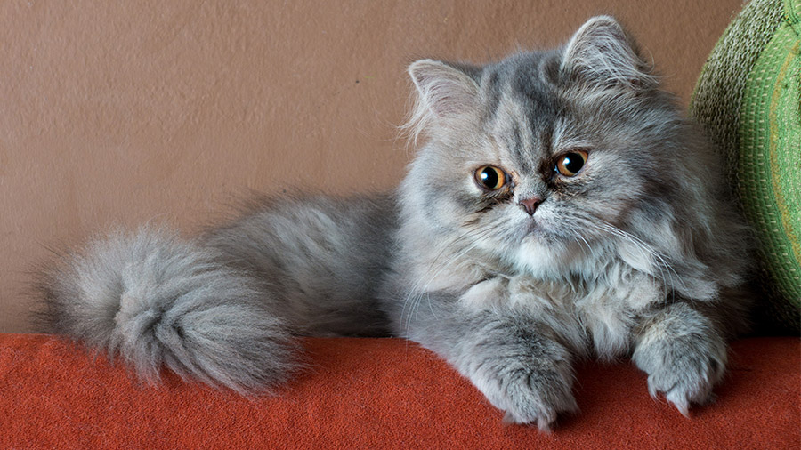
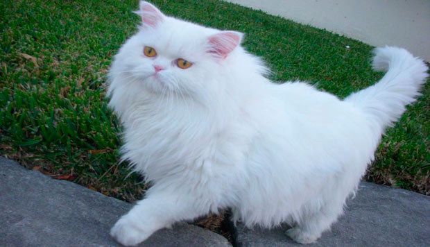
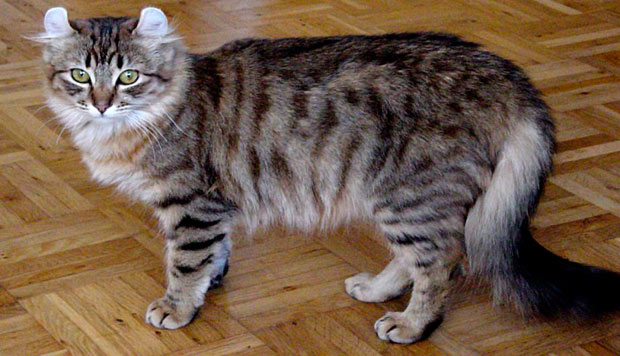
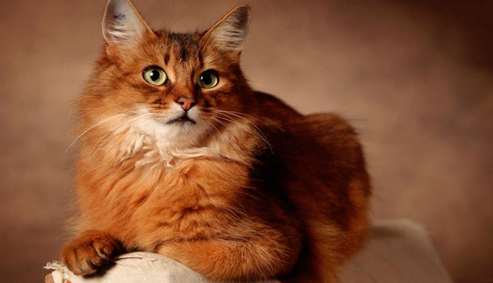
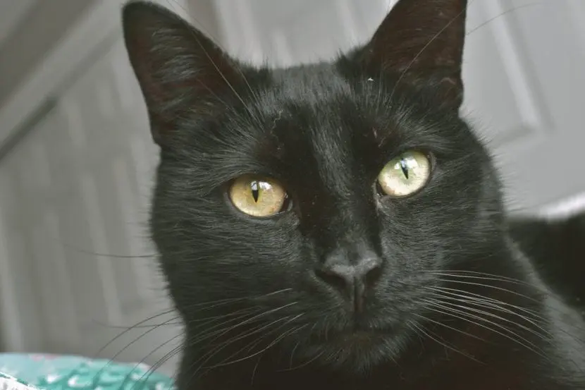
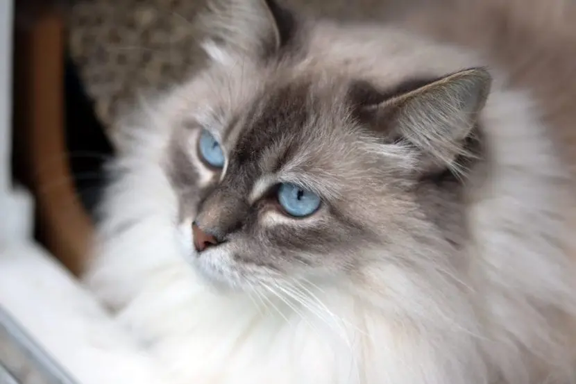
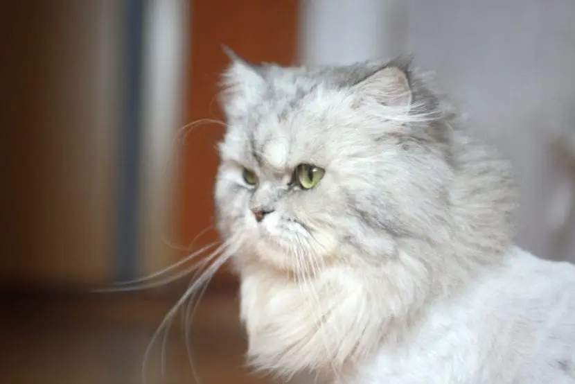

Gatos
Un punto de vista animal
Home
Resume
Top
Info
More
Algunas razas de gatos famosas
Persa

Bobtail Americano

Somalí

Gatos Famosos
Nombre
La gata Nala
El verdadera gata gruñona
Venus, la gata con dos caras
La gatita Coby
Seguidores
3.7 millones
2.4 millones
1,6 millones
1.3 millones
Información Tomada de:
Gatos famosos en redes sociales
Las 10 razas de gatos más famosas
Algunas imagenes de Gatos famosos


